이 시집에는 이재선 목사가 2012년 9월부터 2014년까지 쓴 자아성찰시 24편을 담았습니다.
하나님의 아들이면서 예수님의 제자로 사는 일, 젊음과 늘그막, 홀로와 친구, 눈물과 꽃과 오늘을 돌아본 시들입니다.
시는 쓴 날짜 순서로 엮었고, 쓴 날짜가 적히지 않은 두 편(「왕따」 「오늘」)은 맨 뒤에 두었습니다. 시마다 끝의 지은이 메모는 그대로 두었고, 시마다 한 쪽씩 시의 분위기에 맞춘 렘브란트의 그림을 곁들였습니다.
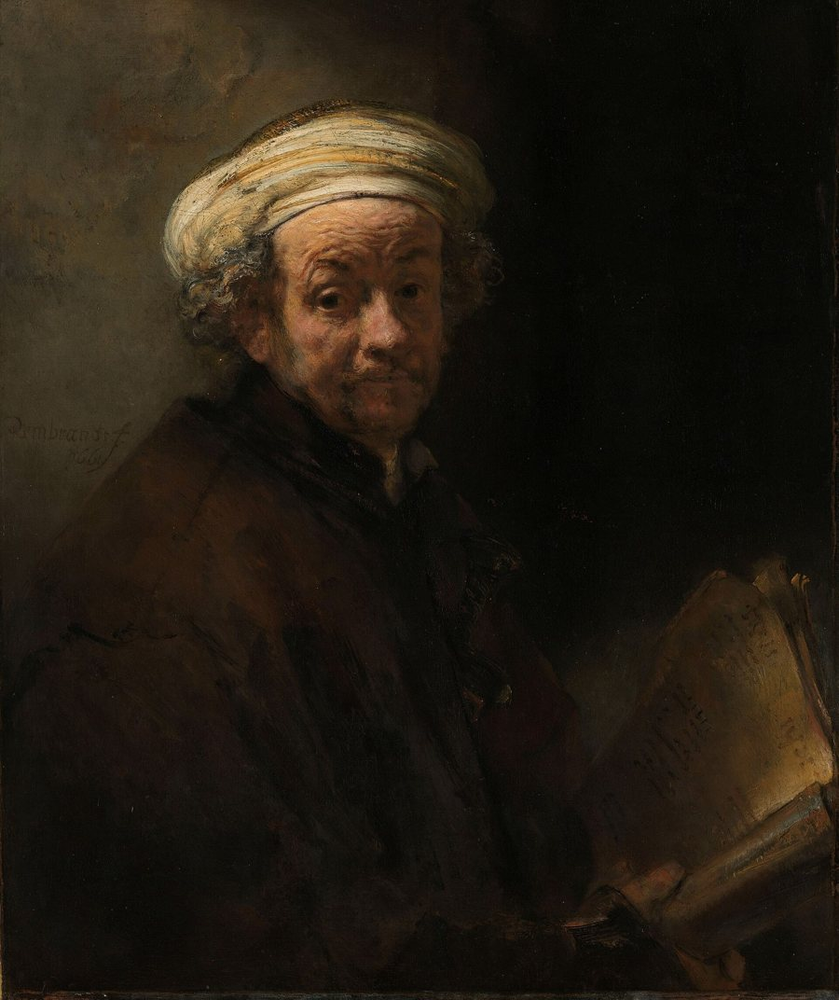
렘브란트 판 레인, 「사도 바울로 분장한 자화상」 (1661)
나는 제자다
하나님은 나더러 아들이란다 예수님은 우리더러 제자란다 아들은 사랑을 받는다 제자는 훈련을 받는다 아들은 응석을 부린다 제자는 스승을 따른다 아버지 하나님은 사랑하기에 예수님을 보내셨다. 예수님은 사랑하기에 배와 그물과 가족을 떠나라 하셨다 더 좋은 것을 주는 법을 아시기에 벳세다 들녁에 갈릴리 바다의 풍랑에 십자가 앞에 세워 두셨다.
공산주의는 쇠뇌를 시킨다 회사는 직원을 강뇌 시킨다 스승은 제자를 감동 시킨다 변화 시킨다 또 다른 스승으로 만든다 공산주의자와 회사원은 조직을 떠나면 욕하고 버리고 다른 길로 간다 제자는 스승을 떠나면 그리워하고 그의 삶을 살기를 열망한다. 그를 닮고 싶어 몸살이 난다. 스승과 헤어졌을 때 풀어지면 제자가 아니다 사명에 불이 붙어 더욱 뜨거워 지는게 제자다 스승은 최고로 좋은 것을 주기 위해 제자를 택한다 스승은 최고로 혹독하게 제자를 다룬다 스승은 말을 삼가고 보여준다 몸소 해 보게 한다 스승과 같이 느낀다. 모든 것을 같은 강도로 쓰리고 같이 아프다
뇌를 믿지 말라 뇌가 아는 대로 행하는 거를 봤는가 뇌는 가짜웃음도 믿는다 뇌는 생각의 반복으로 몸의 익숙함으로 손발의 반복운동으로 쇠뇌 된다. 오직 손과 발과 몸의 익숙함만 믿으라.
2012년 9월 14일(금) 금요기도회를 생각하며 적어 보았다.
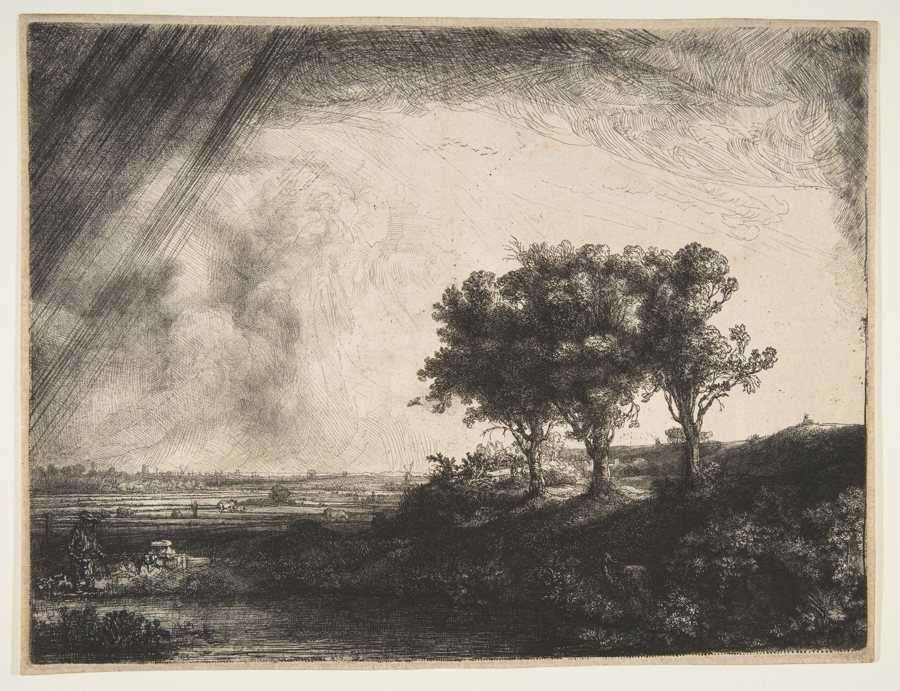
렘브란트 판 레인, 「세 그루 나무」 (1643)
이라서
호두 껍질 동토 녹여 생명 주머니 만드는 살포시 사랑 생명의 시작 봄 생의 소년 봄이라서 좋다
용광로 속 철을 녹이듯 땅을 허물어 생명을 분출케 하고 과여불급(過如不及) 몸에 좋은 대양에너지 넘쳐나 질식케 해 신선함 갈구케 하는 여름 생의 청년 여름이라 좋다
높은 하늘 그 너머 뭐가 있을까 열정도 조절되야 생의 열매 맺게 됨을 가르친 선생된 가을 생의 중년 가을이라서 좋다
땅을 얼리듯 세포의 증식 중단 시키고 능력 막다른 골목길 모든 것 막히니 사방의 우겨쌈 그러나 하늘 길 보게하는 겨울 생의 노년 겨울이라서 좋다
2012년 10월 10일(수) 지음
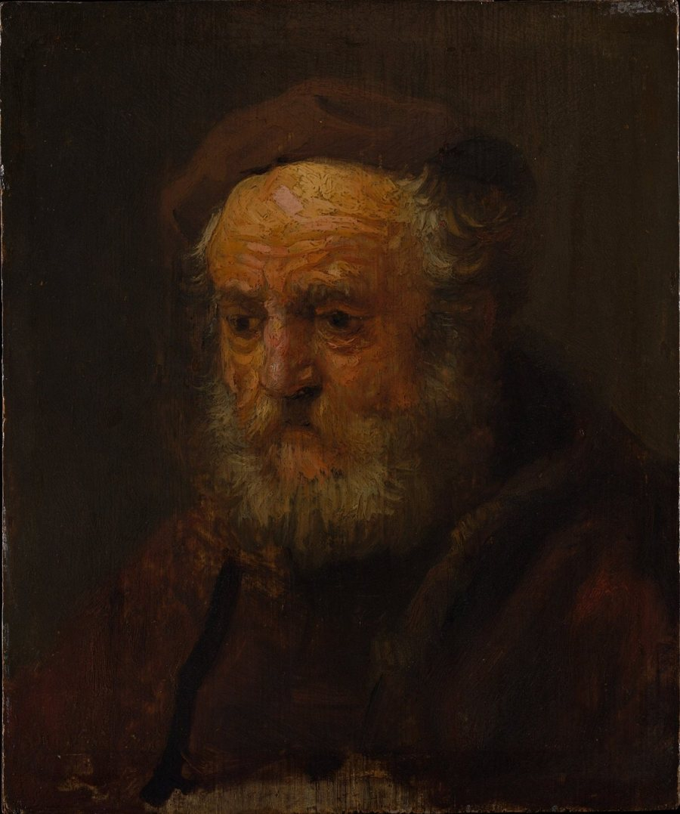
렘브란트 판 레인, 「늙은 남자의 두상 습작」 (17세기)
홀로
모태 속 외로운 달음박질 결국 나 홀로 생명 되었거늘 세상 박차고 나오느라 나와의 싸움
좋은 친구 바랐으나 그래도 "나"라는 한 글자 인생 마주 보며 사랑할 베필 소원 왜 그리 물과 기름 자식들과 도란도란 함께 행복 기대도 뒤로 한채
망망대해 검푸른 파도와 씨름도 외로운 싸움 늙은 아비 모시느라 또 딴 살림 자식 목회 도우느라 나 홀로 옥탑 방 자청
바쁜 자녀들 신세 피해 요양원으로 떠밀리심 마지막 미고운 정 떠나는 날까지 혼자셨네 나의 아버님 인생 늘상 “홀로”
아니 언제나 함께 하신 주님이 곁에 계시니 아버님 인생 언제나 “함께” 그래도 주님과 헤어지지 않을 곳으로 이 땅의 외로움 다 잊으려네
2012년 12월 12일(수) 아버님 장례식장에서 아버님의 인생을 돌아보며 가족과 떨어져서 홀로 지내신 시간들이 많음을 돌아보며 지었다.
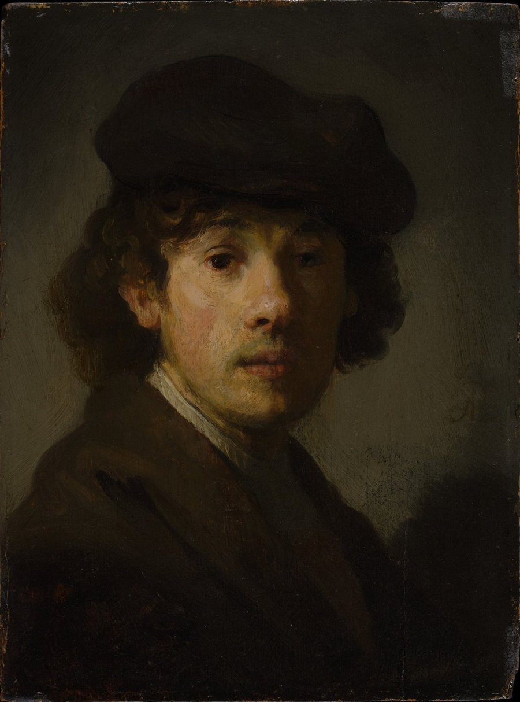
렘브란트 판 레인, 「젊은 날의 렘브란트」 (17세기)
젊음
세상에서 가장 소중한 것을 꼽으라면 당연 “젊음”이라 하겠습니다 왜 젊음이 귀하냐고 물으면 “겁 없음”이라고 말하겠습니다. 젊음은 왜 겁이 없냐고 물으면 겁 없이 살기 때문입니다. 그대 아직도 겁 없이 산다면 젊음이입니다
몇 밤 지새워도 다음 날이 걱정이 안 되면 청춘입니다 한 사람 사랑하다 죽어도 좋은 것 같으면 청년입니다 한 가지 일에 몰입하다 인생 끝나도 후회하지 않을 것 같으면 젊은이입니다
할 일이 계속 생각나 견딜 수 없으면 젊은 것입니다 하루를 끝내고 다음 날이 기대되면 늙은 것이 아닙니다 책을 읽고 싶어 도서관을 찾으면 아직도 젊은 학도입니다
누굴 구하고 싶어 희생해도 좋을 것 같으면 살아있는 나이입니다 자신을 불 살라서 세상을 밝히고 싶다 생각되면 젊은 세대입니다 나 보다 남을 먼저 생각하면 희망의 세대입니다
내년을 걱정하지 않고 올 해 여행을 떠날 수 있으면 청춘입니다 세상을 바꿀 수 있는 새로운 생각을 한다면 신세대입니다 사람들 속에 모여 웃음을 주고 있다면 젊은 세대입니다
누군가가 나와 함께 있고 싶어 한다면 젊은 것입니다 나에게 기대고 싶어 하는 사람이 있다면 청춘입니다 세상 일이 내 일 같으면 청년입니다
온 세계가 내 세상 같으면 젊은이입니다 청춘은 나이가 아닙니다 청년은 몸이 아닙니다
내가 가야할 곳이 남아 있다면 청춘입니다 내일이 겁 없다면 당신은 청춘입니다 젊음은 '겁 없음'입니다
2013년 2월 13일(화) 전에 내가 나이 들어감을 느끼며 젊음을 부러워했다. 젊음의 어떤 면이 제일 부러운가 생각해 보니 겁 없음이었다. 부러운 그 젊음을 생각하며 적어보았다.
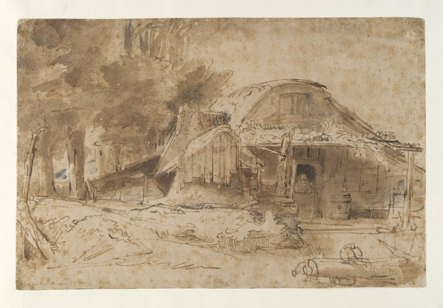
렘브란트 판 레인, 「숲 어귀의 오두막」 (1644)
눈으로 와 주세요
물 비로 말고 눈으로 와 주세요 그래야 조금씩 깊이 받을 수 있어요 비로 오면 다 흘러 가잖아요 눈으로 와야 한 방울도 놓치지 않아요
물 비로 말고 눈으로 와야 해요 닿을 때 차갑고 괴롭지만 그래야 놓치지 않고 품을 수 있어요 얼음 결정 눈으로 와야 내 살에 스며요
생 넘침 말고 모자람으로 와 주세요 결핍과 씨름하며 괴성 터지겠지만 그래야 내 것이 되어 인생 살찌우는 걸음 되지요 대지 뒤덮은 눈이 가르치네요 과여불급이라고
2013년 2월 13일(수) 눈 덮인 산을 보면서 서서히 녹으면서 대지가 다 흡수하여 봄에 싹틔우는데 유용할 것 같아서 적어 보았다.
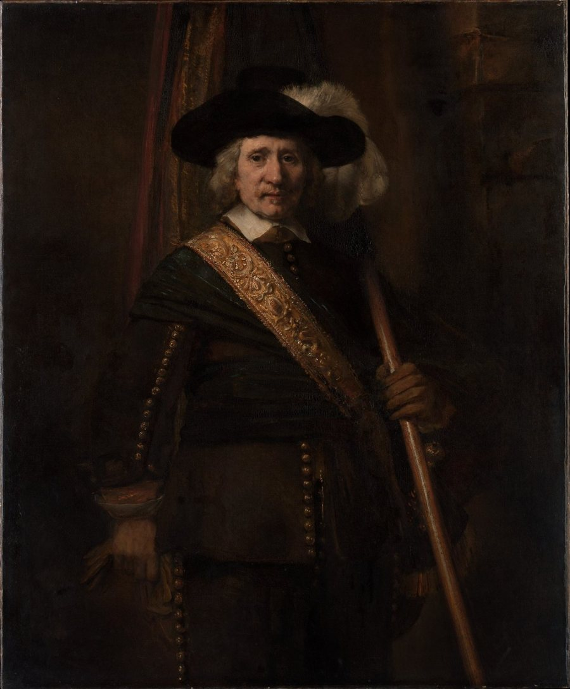
렘브란트 판 레인, 「기수(旗手)」 (1654)
힘
힘 손이 아니라 팔에 팔이 아니라 어깨에 어깨가 아니라 허리에 허리가 아니라 다리에 그 힘의 시작됨을 알았습니다
능력 입이 아니라 지식에 지식이 아니라 생각에 생각이 아니라 가슴에 가슴이 아니라 삶에 그 능력 수족에서 시작됨을 알았습니다
2013년 2월 15일(금) 광은기도원에서 새벽기도회 갔다가 아무도 없어(금요 철야 후 새벽기도회가 없는가 보다) 묵상 중에 생각나 적어 보았다.
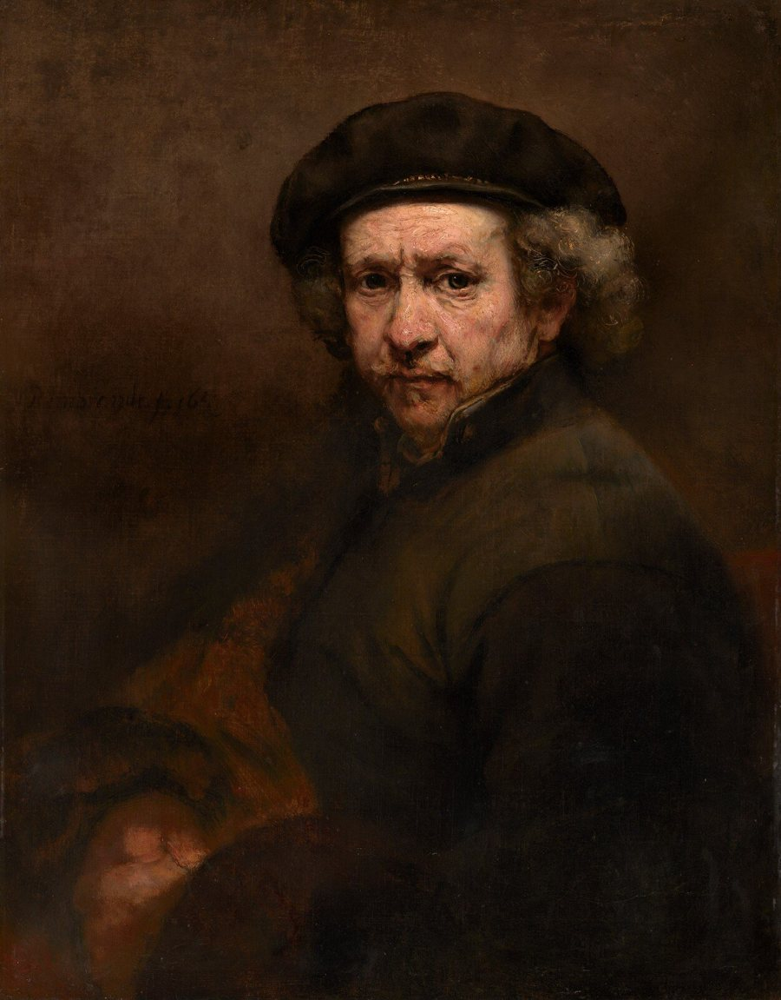
렘브란트 판 레인, 「자화상」 (1659)
늘그막에
젊었을 땐 연구를 했습니다 양복과 넥타이를 골랐습니다 제스춰를 연습했고 목소리를 흉내 냈고 목에 핏대를 세웠습니다 감동이 있는 듯 했습니다 그러나 머리 밖에는 다다르지 못했습니다.
말씀의 힘은 일상에서 쓰는 말에 매일 드리는 기도에 선배 목사님을 본 받음에 매일 살아가는 모습에 주님의 본받는 삶에
거기에 있음을 늘그막에 그제야 알았습니다
2013년 2월 15일(금) 새벽 전날 아내에게 화나게 하는 말을 하고 다음 날 새벽에 생각해 보며 적어 보았다.
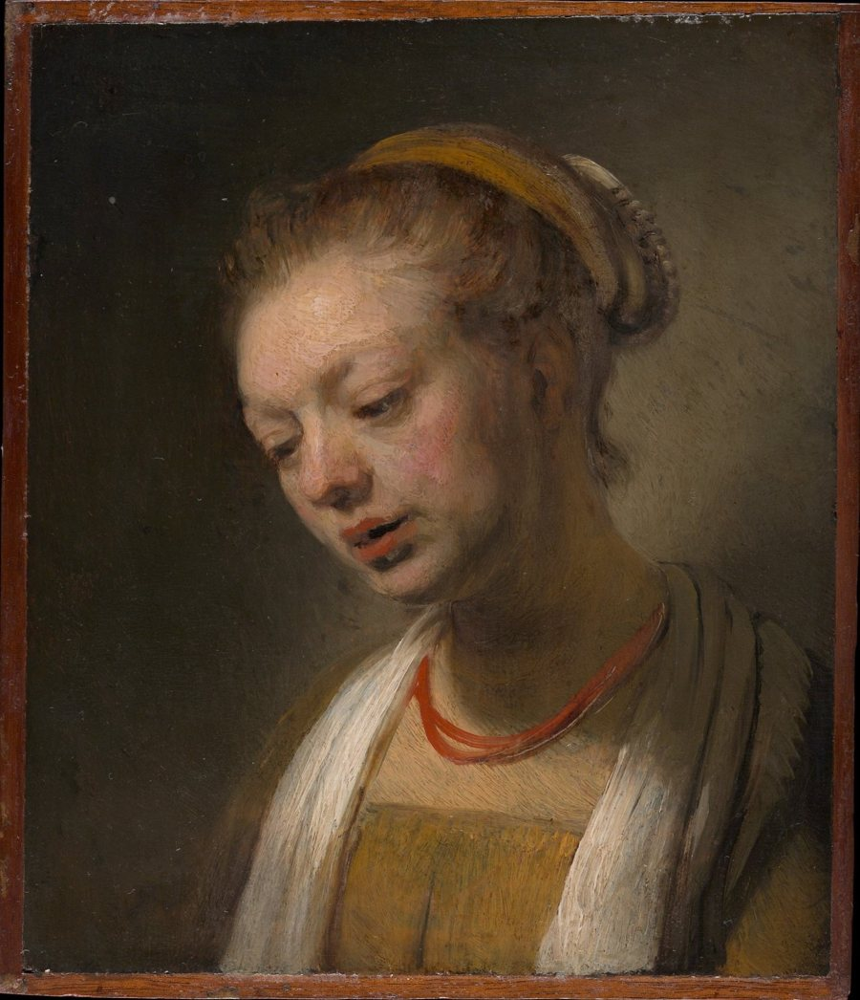
렘브란트 판 레인, 「붉은 목걸이를 한 젊은 여인」 (1645년경)
선물(膳物)
나는 글을 쓴다 아무도 알아주지 않으면 어떻하나 그래도 자꾸 써진다 다시 읽어보면 지워버리고 싶다 어떨 때는 고개가 끄덕여진다 종잡을 수 없다
어느 날 이걸 보고 용기가 나네 “나에게 선물하기” 이왕이면 “나에게 선물하기”로 구매 기쁨 두 배, 행복 네 배 오늘부터 쓰는 시는 “나에게 하는 선물 시”다 혹시 몇몇 님들께 선물 될 날 기대하면서
2013년 2월 15일(금) 광은기도원에서 시를 쓰면서 자신 없어 하는 나에게 용기를 불어 넣어 주었다.
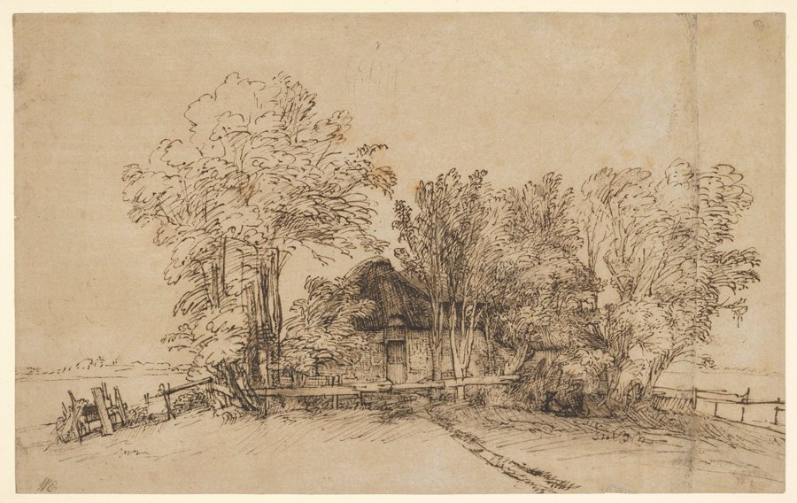
렘브란트 판 레인, 「나무 사이의 오두막」 (1650년경)
준비
한 겨울 눈 밭에 씨눈 방울이 맺혔습니다 몸에 틔울 씨를 준비했나 봅니다 나무는 봄을 겨울에 준비했습니다 봄은 봄에 준비하는 게 아닌가 봅니다
게으른 농부는 봄에 걸음을 찾아 나섭니다 똑똑하지 못한 수험생은 닥쳐야 책을 펼칩니다 미련한 청년은 적령기가 돼서야 배우자를 찾습니다 미숙한 성도는 죽을 때 “~껄”합니다
부지런한 농부는 겨울에 씨를 준비합니다 지혜로운 학생은 평소에 시험을 준비합니다 명철한 사람은 젊을 때 인생 전반을 대비합니다 슬기로운 신앙인은 살았을 때 다음 세상을 예비합니다
2013년 2월 15일(금) 광은기도원에서 한 겨울에 씨눈을 준비한 겨울 나무를 보며 적어 보았다.
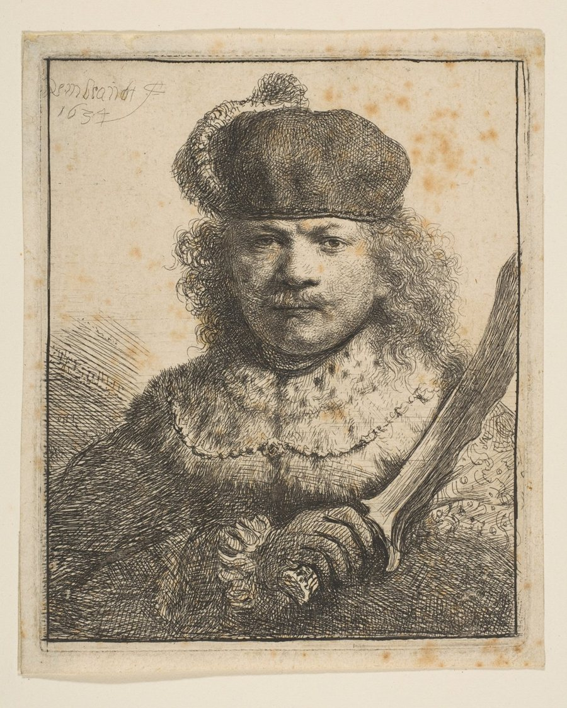
렘브란트 판 레인, 「칼을 치켜든 렘브란트」 (1634)
두려운 자유자
누가 나를 미워 한단다 뭐가 두려운가 내가 나를 사랑하는데
누가 나를 잘 못 한단다 뭐가 걱정인가 내가 잘 하고 있는 것을
누가 나를 비난 한다 뭐가 문제인가 내가 부끄럼 없는데
누가 나를 못났다고 한다 뭐가 부끄러운가 내가 나를 가꾸고 있는데
두려움은 남이 주는 게 아니다 나로부터 오는 것이다 두려움은 이기는 법은 나를 이기는 것이다
나를 이기려면 사랑하고, 가꾸고 최선을 다 하는 것 부끄럼 없이 사는 것 두려움 없는 자유인의 삶
2013년 2월 21일(목) 광은기도원에서 교회에서 반갑지 않은 소식을 듣고 걱정스러움 마음을 달래려 적어 보았다.
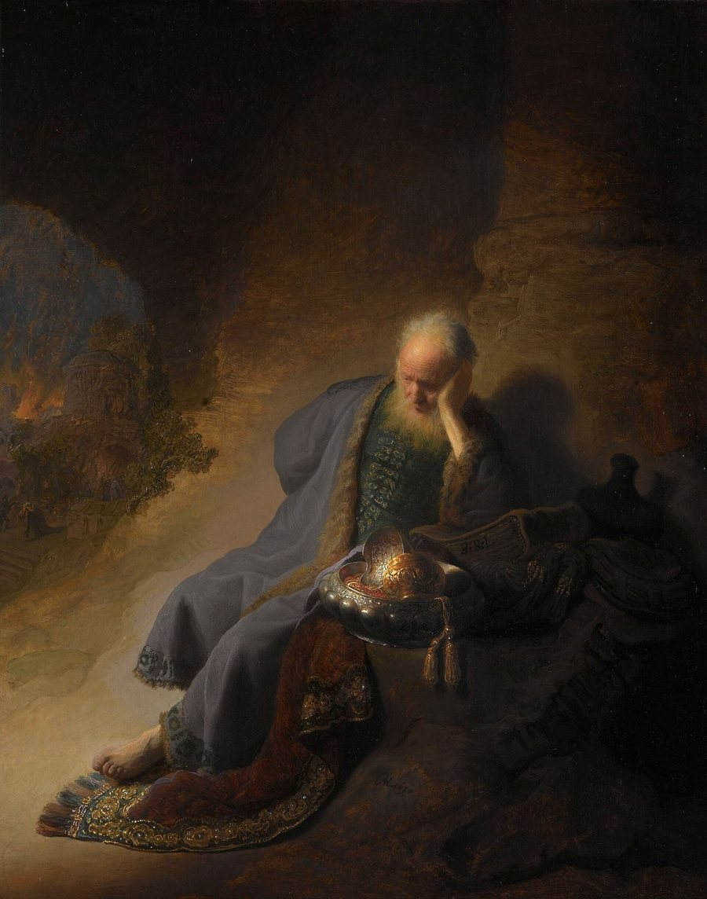
렘브란트 판 레인, 「예루살렘의 멸망을 슬퍼하는 예레미야」 (1630)
눈의 물
갓 난 아이의 신호탄 눈물 엄마와 생이별 아가의 청천벽력 눈물 생애 첫 걸음 실패를 맛본 수험생 낙수 죽기보다 더 힘은 헤어짐 사선에서 흘리는 통분 미운 정 고운 정 다 들어 먼저 보내는 중년의 끈끈한 점액질 눈물의 종류도 많건만 눈물 무슨 에너지가 있을까
연극 배우 가짜 눈물도 가슴을 적시니 수돗물 흐르듯 한 눈물 소용없건만 눈에서 흐르는 한 방울의 감동 성분으로 치면 별반 다름없음 눈의 물은 치료, 감격, 회복, 생명 모든 사람을 담은 눈이기에 온 우주를 비추는 빛이기에 눈의 물은 생명 물
눈물을 흘려 보았는가 까닭모를 눈의 물을 쏟아 보았는가 이유 없는 눈물을 머금어 보았는가 눈물로 버무려진 인생 사람 속 생명의 터치 오늘도 눈가엔 기쁨의 골짜기 패이고 골짜기 따라 행복의 시내가 흐르고 이내 생명의 강 되어 환희의 바다
2013년 2월 28일(목) 광은기도원에서 눈물을 쏟으며 적어 보았다.
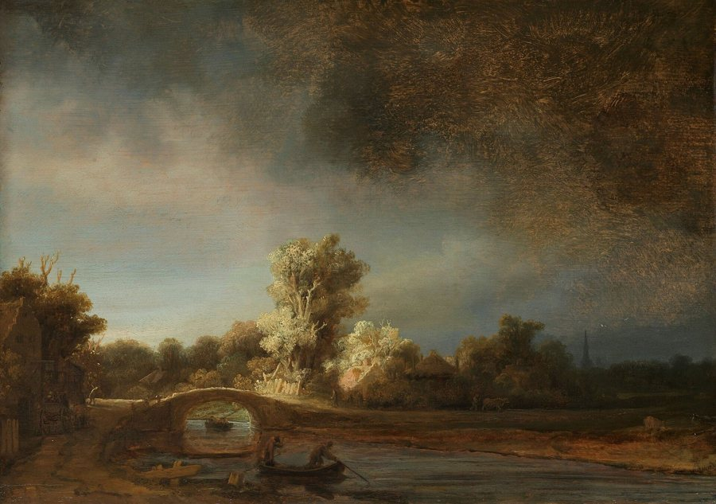
렘브란트 판 레인, 「돌다리가 있는 풍경」 (1638년경)
시인
시는 다리다 사물과 인간을 잇는다 존재와 질문에 답한다 시는 답을 쓰는 것이다 답을 알면 시가 나온다 답을 알고 살면 시인이다
시를 꼭 써야 하나 시인으로 살면 그만이지 시를 읽지 않는다 탓하지 마라 쓰지 않음에 무시하지는 더욱 마라 이미 시인이다 삶은 시인 것이다
2013년 3월 14일(목) 교회에서 <우리 모두 시인으로 태어났다> 임동탁의 책을 읽고 적어 보았다.
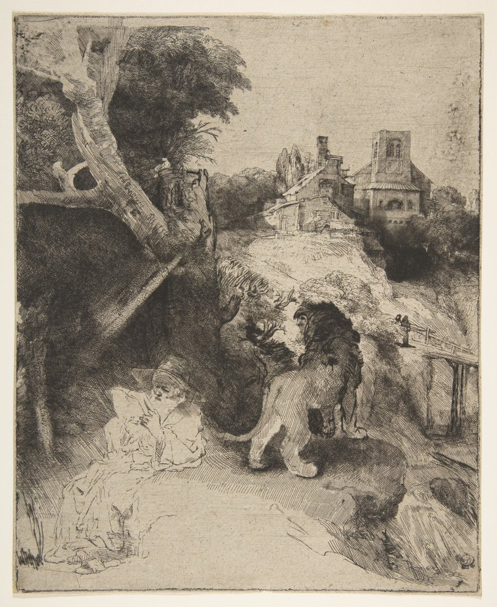
렘브란트 판 레인, 「이탈리아풍 풍경 속에서 책 읽는 성 히에로니무스」 (1653년경)
친구
더워 옷 벗어 어깨 맨 것 아니오 비 두려워 우산 집어든 것 아니라니까 손 허전해 책 한 권 팔짱 긴 것 아니라네
외톨이 홀아비 홀어미 외롬둥이
친구 그리워 외투 벗 삼고 우산 말동무 삼고 책 속 친구 동무 삼으니 세상의 모든 것 나의 동반자
2013년 9월 11일(수) 날씨가 더워서 웃옷 벗어 어깨 매고 가다가 문득 생각이 났다.
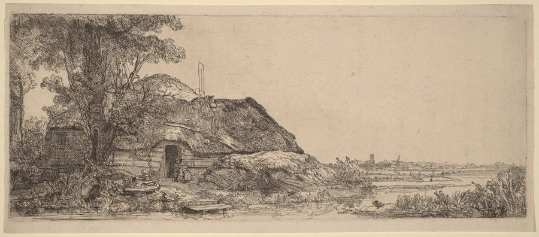
렘브란트 판 레인, 「오두막과 큰 나무가 있는 풍경」 (1641)
마음
돌같이 굳은 젊음의 의협심 세월이 약이 되어 마음에 옷을 입고 이런저런 사람 품고 품어 옳고 그름 대쪽 마음 내려놓고 이 주장, 저 주장 다 받아 내니 어느 새 부드런 마음 되어 모두를 얻었네
보드란 마음 문빗장 풀리고 연한 뿌리 같은 마음 투쟁심 화목하게 받아줌의 유연함 거목 되고 숲을 이루네
2013년 12월 23일(월) 소나무도 갈라내는 연한 뿌리가 있듯이 사람들의 굳은 마음을 여는 것은 부드런 마음인 것을 알았다.
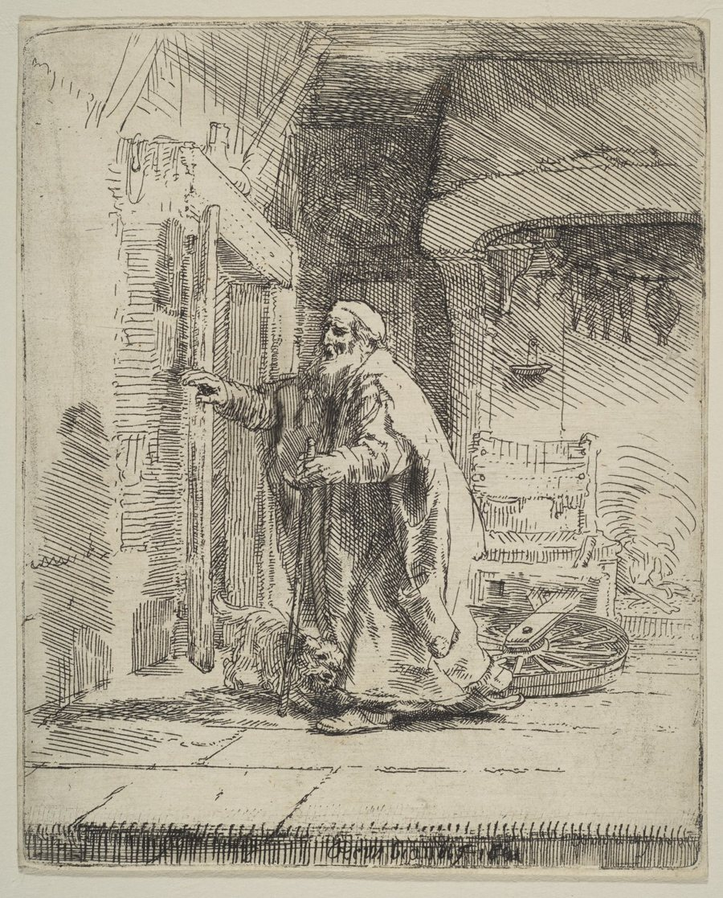
렘브란트 판 레인, 「눈먼 토빗」 (1651)
눈(目)
누가 눈이 보배라 했는가? 너무 먼 것도 아주 작은 것도 속 것들도 마음도 못 보니 보배가 아니라 바보
보는 것 밖에 못 보는 놈 살아보니 눈으로 못 보는 것이 이리도 많은 것을 네 놈 눈이 다 본다 하였으니 거짓부렁이 눈
내게 보이는 것만 잘 보기보다 볼 수 없는 것 아무리 애써도 못 보는 것 눈으로는 안 보이는 것
마음, 바램, 갈망을 보게 하소서 눈에 보이지 않는 바로 그 ‘분’을 보는 눈을 주소서
2014년 1월 8일(수) 명성수양관에서 낯이 되어 보이는 것이 잘 보여서 좋은데, 눈으로 볼 수 없는 것들이 너무 많다는 생각에 적어 보았다.
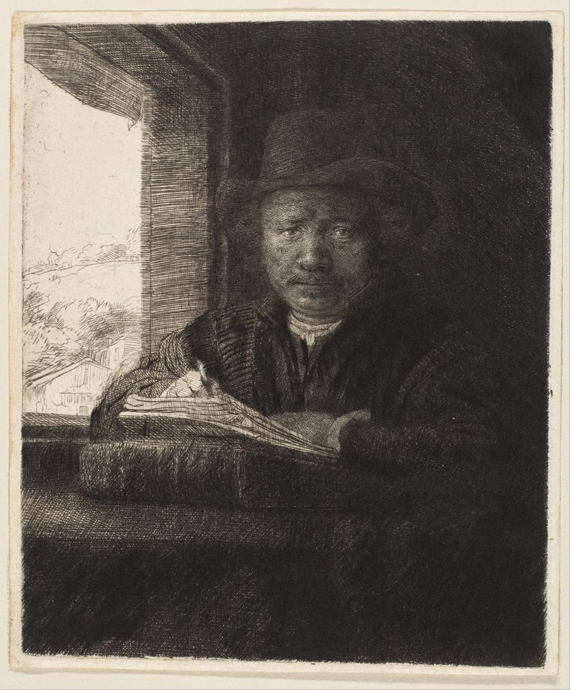
렘브란트 판 레인, 「창가의 자화상 (동판화)」 (1648)
넌 누구냐?
넌 누구냐? 엄마의 아들 아내의 남편 애들의 아버지
넌 누구냐? 직장의 직원 동창생의 일원 친목회의 회원
넌 누구냐? 시민 도민 국민
넌 누구냐? 이름 석자일 뿐
나를 살찌우려 양분도, 지식도, 돈도 채웠건만 남은 건 살찐 빈곤 뿐 무인도 속 외로움
존재감은 오직 관계의 망 타인을 풍요케함이 ‘나’ 낮아지면 올라가는 ‘너’
넌 누구냐? ‘~의’_____
2014년 1월 16일(목) 광은기도원에서 산책하며 가만히 생각해보니 나란 존재는 오직 누구와의 관계에서만 성립됨을 보면서 타인을 위해 사는 것이 곧 나를 위한 것임을 알게 되고 지어보았다.
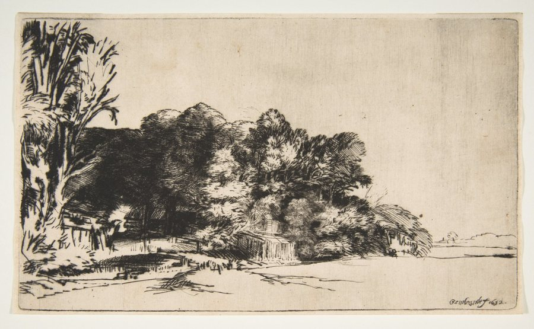
렘브란트 판 레인, 「멀리 트인 나무 숲」 (1652)
수목장
한 가장의 통렬한 주검 동토 파헤쳐 묻고 가녀린 묘목 한 그루
애기 나무여 뿌리 잘 내려 몸 덩어리 찌르고 파고들고 진액을 흡입하라
피를 빨아 싹을 틔우라 몸도 마음도 다 줄 것이니 가지치고 꽃피우고 열매 맺으라
가시고기 살점 때어주듯 죽어서도 다 주는 이 육신 먹고 여린 묘목은 재목되고 잿빛 재목은 거무스름 거목되거라
묘목 속에 거름으로 남으리 재목 속의 양분되어 흐르리 거목 속에 분신되리
이름 모를 한 가장 넌 죽지 않았다 지친 영혼들 쉼터 거목되어 영원히. . .
2014년 1월 16일(목) 광은기도원에서 에스라성경연구회 자녀들을 생각하며 벌써 20-30대가 되어 재목이 된 리틀에스라를 생각하며 적어 보았다.
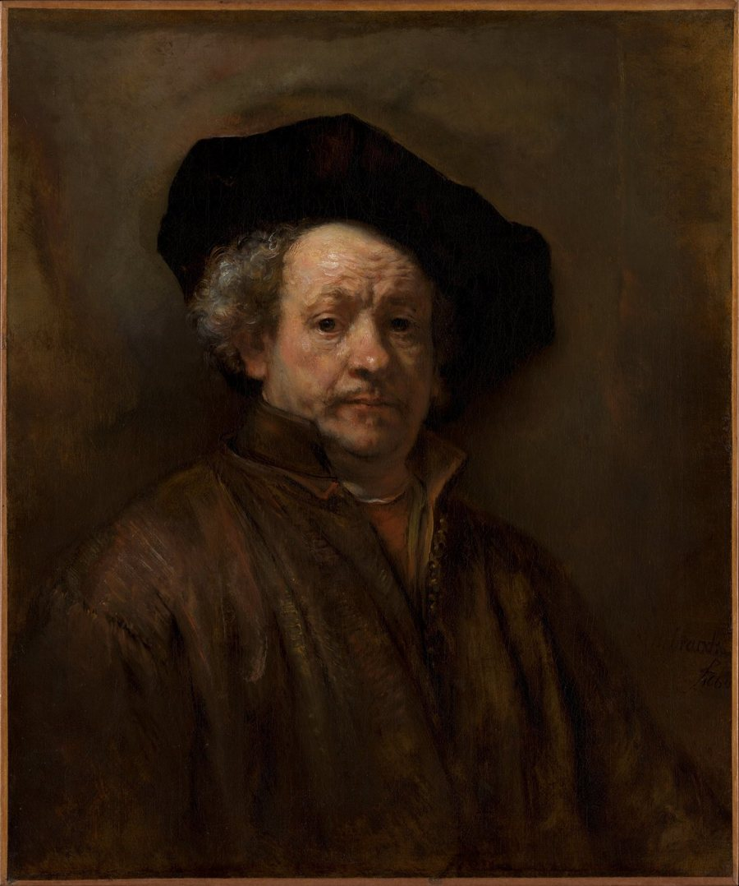
렘브란트 판 레인, 「자화상」 (1660)
선수
운동선수 화가 음악가 연예인
니들은 뭐가 잘났기에
연봉이 그리 많노 그림은 왜 그리 비싸노 명성은 왜 그리 높노 인기는 왜 그리 많노
니들이 뭘 알길래
우리 노력을 아노 아픔을 아노 고뇌를 아노 고독을 아노
좋아서 죽어라 했을 뿐이고 아픔을 그렸을 뿐이고 영감을 표현했을 뿐이고 끼를 살렸을 뿐인 것을
우리의 인생을 왜 돈으로 명성으로 인기로 재려고 하는가?
그런 잣대로는 평가할 수 없는 인간의 고뇌가 우리 속에 있노라
우리는 자유로울 수 없는 선수!
2014년 1월 17일(금) 버지니아 울프의 <존재의 순간들>을 읽고 버지니아 울프 뿐 아니라 수많은 유명인들이 얼마나 큰 아픔들을 겪었는지를 생각하면서 적어 보았다.
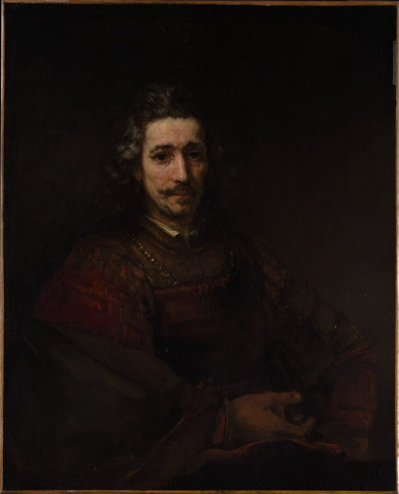
렘브란트 판 레인, 「돋보기를 든 남자」 (1660년대 초)
하나만 하기
텔레비전 보면서 과자 먹고 밥 먹으면서 신문보고 신문 보면서 텔레비전 시청 전화하면서 대화 스마트폰하면서 가족 여행 게임에 몰두하여 연인과 데이트
한 번에 하나 하루에 한 가지 한 손으로 한 개 한 자리에서 하나의 일만 그렇게 하며 살 수 없을까
사과를 깍았다 한 입 두 입 베어 물었다 사과만 먹기에는 눈이 아까웠다 한 가지만 하고 있는 내가 이상했다 아니 정확히 말해 불안했다 왜? 한 가지만 하고 있는데 불안정하게 생각될까 마음을 다 잡아 먹었다 한 가지만 하리라
사과 한 입을 물었다 새콤 달콤 맛이 배어 왔다 입이 즐거워했다 깊은 맛이 느껴졌다 이게 사과 맛이구나 새삼 사과를 느낄 수 있었다 텔레비전 보며 먹는 사과와 달랐다
나는 앞으로 이렇게 한다 옷 두 개씩 벗지 않기 책 페이지 넘길 준비 안 하기 머리 감으면서 세수하지 않기 대화 할 때 전화 받지 않기 컴퓨터 두 개 사이트 보지 않기 버스 타고 책 보지 않기 노래 들으면서 책 보지 않기
사과를 보며 텔레비전을 먹었다 드라마를 보며 귤을 삼켰다 가족과 대화하며 일을 했다 사람을 만나 사업을 했다 결국 한 개의 사과도 못 먹고 한 가지의 일도 하지 못 하고 한 사람도 사랑하지 못 했다 한 인간으로도 살지 못했다
2014년 1월 20일(월) 광은기도원에서 사과 한 개를 깍아 먹다가 문득 내가 어떻게 살아 왔는지를 생각하며 적어 보았다.
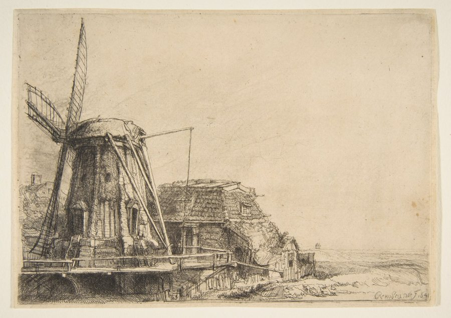
렘브란트 판 레인, 「풍차」 (1641)
무엇이 하고 싶다면
무엇이 하고 싶다면 아무것도 하지 마세요 그 일이 하고 싶다면 그 일만큼은 하지 마세요 해야 한다면 그 것에서 멀어지세요 사랑하고 싶다면 그 사람을 떠나세요 사랑을 받고 싶으면 그 사람을 지우세요
그리고 나서
하고 싶을 때를 기다리세요 할 수 있는 기회를 잡으세요 하고 싶어 미칠 지경에까지 다달으세요 화산이 폭발하는 것처럼 속에서 나오도록 하세요 성취는 우물물을 퍼 올리는 게 아닙니다 성공은 용암이 분출하듯 하는 것입니다
하고 싶은 것을 담아두세요 압축이 커질수록 분출은 커집니다 청년의 때는 발산이 아니라 응축의 때입니다 많은 실패는 당신은 성공의 확률을 높입니다 그 사람과 멀어질수록 당신 곁에 오는 것입니다
2014년 1월 20일(월) 광은기도원에서 <광팬은 어떻게 만들어지는가?>를 읽으면서 안식년 중인 나와 나의 목회를 생각하며 적어 보았다.
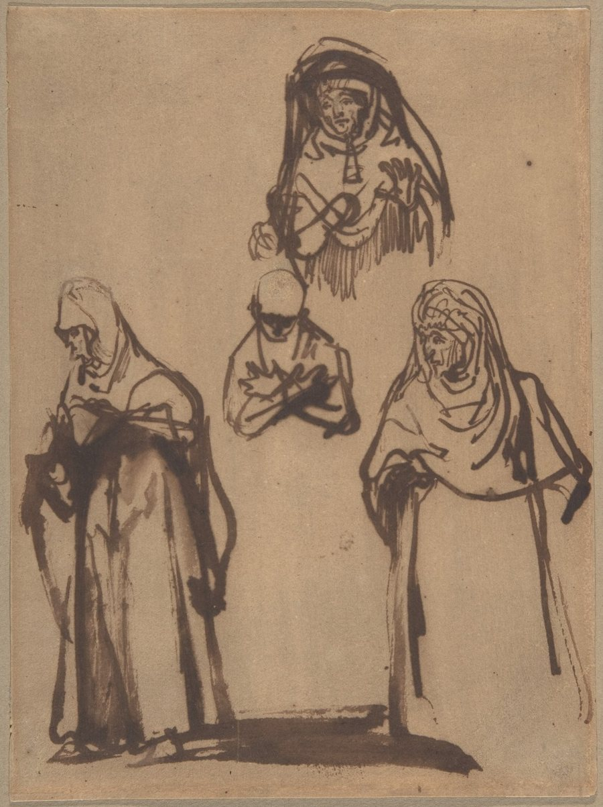
렘브란트 판 레인, 「세 여인과 한 소년의 습작」 (1638년경)
생명의 꽃
꽃보다 더 아름다운 생명 꽃 구경 온 애기 엄마 벚나무 꽃 나몰라라 애기 꽃 사랑애 빠졌네 벛꽃 그저 멀리 보이는 그것 생명 꽃 가까이 만져지는 볼로 부벼지는 가슴으로 저며 오는 영원히 포개지는 꽃
2014년 4월 24일(화) 리더들과 함께 단합대회를 호암미술관에 갔다가 벚꽃의 만개를 보면서도 오히려 자신의 애기, 성도의 애기를 더 사랑스러워 하는 모습을 보면서 생명 꽃이 더 아름다움을 표현해 보았다.
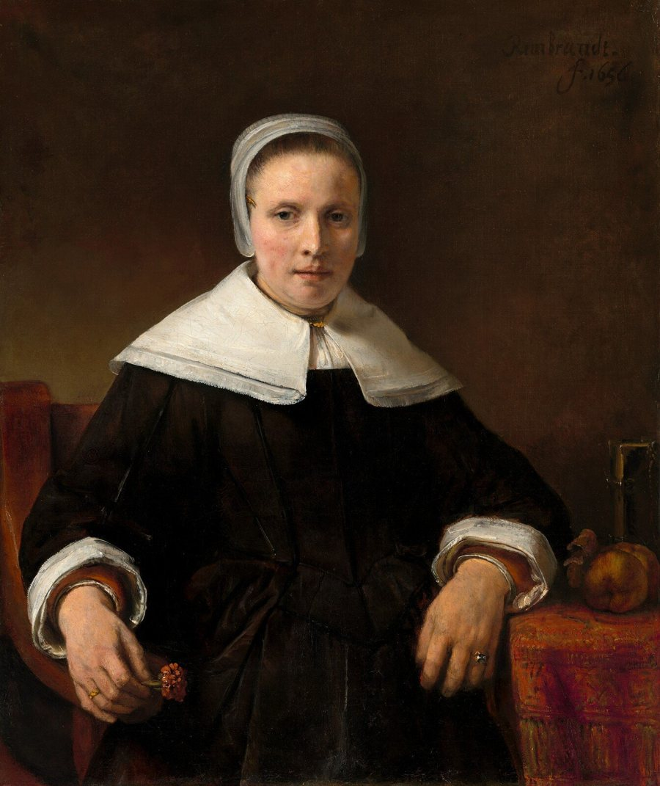
렘브란트 판 레인, 「패랭이꽃을 든 여인」 (1656)
인화(人花)
꽃보다 더 아름다운 생명 꽃구경 온 애기 엄마 벚나무 꽃 나 몰라라 애기 꽃 사랑에 빠졌네 벚꽃 그저 멀리 보는 그것 생명 꽃 가까이 만져지는 볼로 부벼짐 가슴으로 저며 오는 영원히 포개지는 꽃 빛나는 자태 벚꽃도 시샘하네
2014년 4월 24일(화) 리더들과 함께 단합대회를 호암미술관에 갔다가 벛꽃의 만개를 보면서도 오히려 자신의 애기, 성도의 애기를 더 사랑스러워 하는 모습을 보면서 생명 꽃이 더 아름다움을 표현해 보았다.
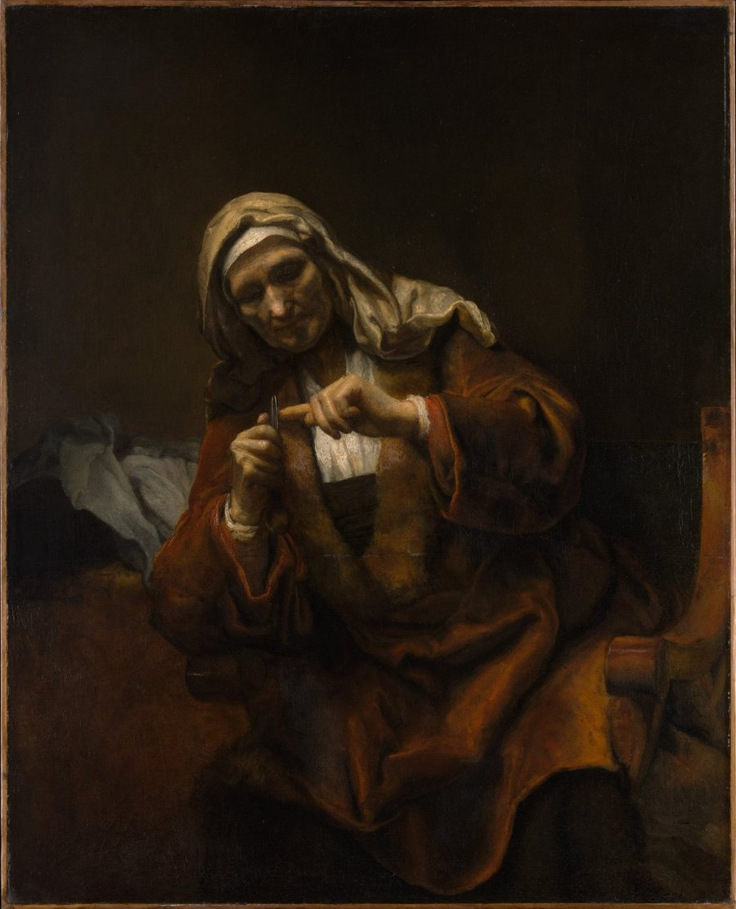
렘브란트 판 레인, 「손톱을 깎는 늙은 여인」 (1655년경)
왕따
너는 왜 홀로 피어 있니 화려한 화군(花群)을 멀리하고 뭐 그리 잘났다고 혼자 솟아 났니 나 홀로 길 간 게 아니라 꽃들이 나를 두고 간 거에요
너 왜 혼자 노니 시끌벅적 생기 대화 끼지 못하고 나 홀로 도시락 맛난 반찬 그리 아깝노 그게 아니라 그게 아니라 제네들이 나를 두고 간 거예요
홀로 된 꽃 주목 되네 떼어 논 줄 알았더니 관심 백배 왕 따 인생인줄 알았더니 사랑의 포커스 “00는 사랑받기 위해 태어난 사람” 따돌림이 아니라 사랑의 중심
광은기도원에서 벚꽃이 나무 기둥에 홀로 아름답게 피어 있는 모습을 보면서 아이들이 왕따로 상심해 있는데 따돌림이 아니라 관심과 사랑의 주목받는 대상이라는 것을 알려주고 싶어서 적어 보았다.
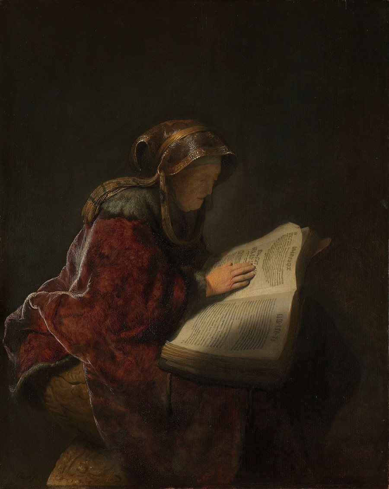
렘브란트 판 레인, 「성경을 읽는 늙은 여인 (예언자 안나로 알려짐)」 (1631)
오늘
오늘은 오는 날 오! 늘 있는 날
오늘이 왔다 오르는 날이 되어야 한다 오늘을 살아냈다 오늘만 살면 된다
매일이 오늘 내일은 없다 “내일 일은 난 몰라요 하루 하루 살아요“ 나에겐 오늘 뿐 오늘을 이기니 또 오늘이 왔다
오! 오늘은 늘 있을 날 오늘, 너! 오늘을 기다리라
어제의 오늘이 오늘의 한 날이길 오늘의 하루가 내일의 매일이길
오! 늘 있는 날이여! 천년을 하루같이 하루를 천년처럼
오늘 너 하루를 영원처럼 살리라 오늘이여 영원하라!
2014년 1월 10(금) 명성수양관에서 하루 하루를 지내면서 오늘 이라는 하루를 생각해 보았다.